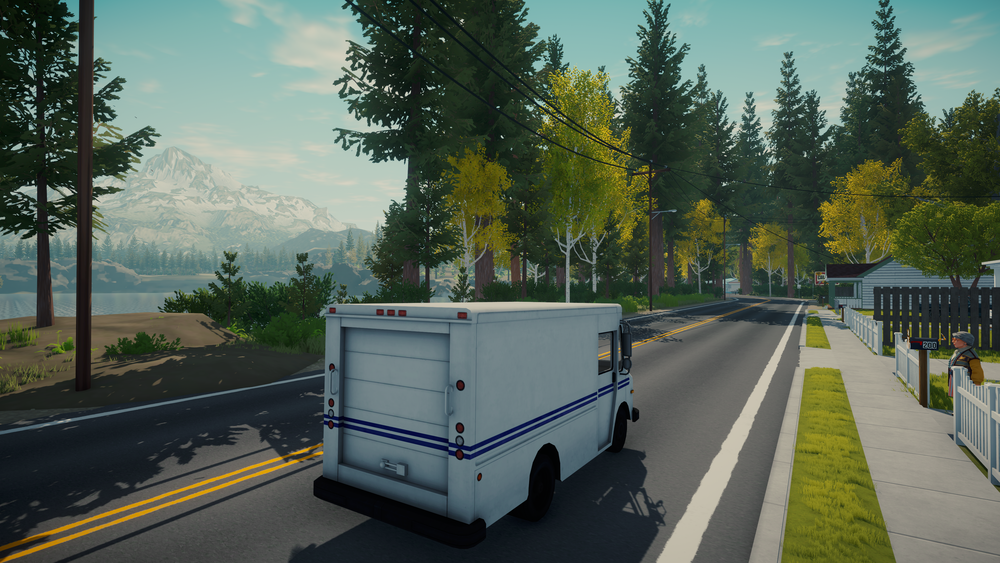
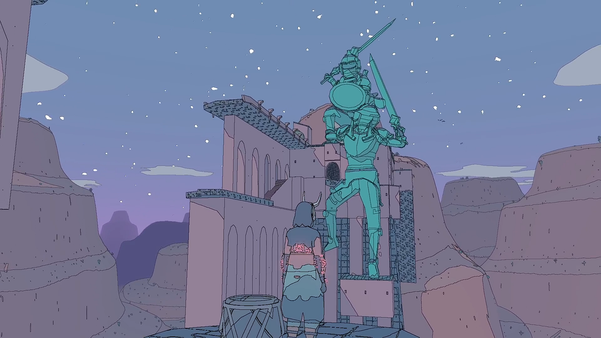
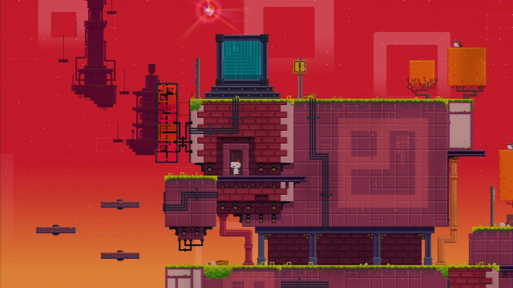

Lake on näistä kolmesta pelistä se, mistä olin eniten yllättynyt. Sain pelin
alennuksessa ja ajattelin kokeilla sitä. Ensisilmäyksellä peli oli hyvin yksinkertainen ja
toistuva ja postin jakelu oli välillä jopa tylsää. Mutta kun seurasi tarinaa enemmän ja pääsi
tutustumaan kaikkiin pelin sivuhahmoihin ja rakentamaan suhteuta heihin, niin peli alkoi herätä henkiin.
Yhtäkkiä olin aivan sisäistynyt tarinaan ja maailmaan ja pelaaminen alkoi tuntua rauhalliselta ja
todenmukaiselta elämältä pienessä kylässä. Vaikka läpäisin pelin alle 8 tunnissa, niin se jäi positiivisesti
mieleeni.
3.5/5

Sable oli myös yllättävä kokemus. Olin tosin ennen pelaamista jo kiinnostunut, koska
rakastuin heti pelin visuaaliseen ilmeeseen ja musiikkiin, jotka havaitsin trailerissa. Tässä pelissä en ollut
niin uppoutunut tarinaan, mutta sen sijaan pelin avoin maailma oli aivan omalla tasollaan. Tähän peliin
käytin näistä kolmesta eniten aikaa, lähes 12 tuntia, vain tutkiakseni maailmaa ja löytämään kaikki salaisuudet.
Sivuhahmot olivat hyvin harvoja ja se loi tunteen, että olit maailmassa todellakin lähes yksin. Sable sopii juuri
kaikille, jotka nauttivat tuntemattoman tutkimisesta ja mysteereistä.
4.5/5

Fez on näistä kolmesta pelistä ehdottomasti eriskummallisin. Fez ottaa videopelien mysteerit
ja vaikeat pulmat ja nostaa ne aivan älyttömälle tasolle. Ensimmäiseksi
silmään pisti tietysti pelin taiteellinen ja retro ulkoasu, mutta heti ensimmäisissä pulmissa jouduin pysähtymään
miettimään pitkäksi aikaa. Monessa pulmassa jouduin jopa seuraamaan pitkiä ohjeita netistä ja jopa kääntämään kryptistä
salakieltä, mutta silti peli ei tuntunut ärsyttävältä tai liian vaikealta, päinvastoin. Jos nauttii pulmien ratkomisesta, niin
Fez tekee sen paremmin kuin mikään muu peli.
4/5